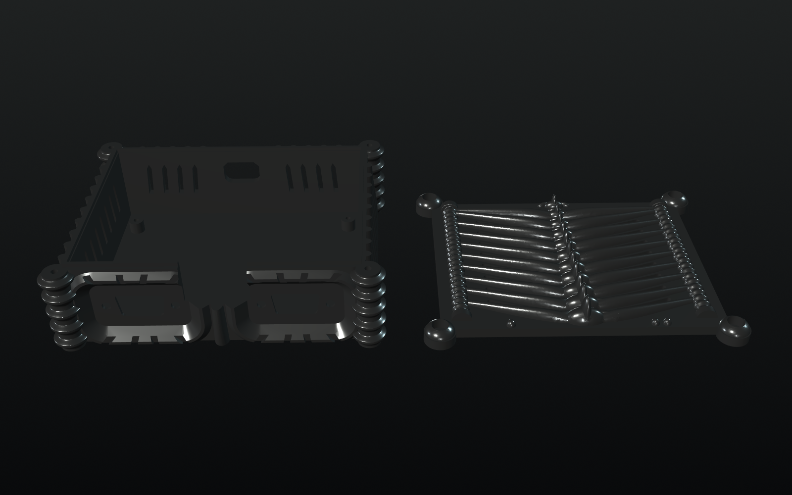
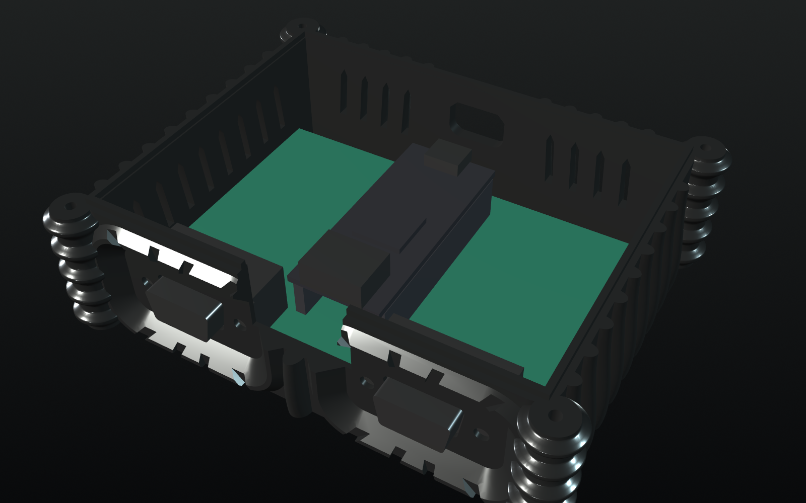
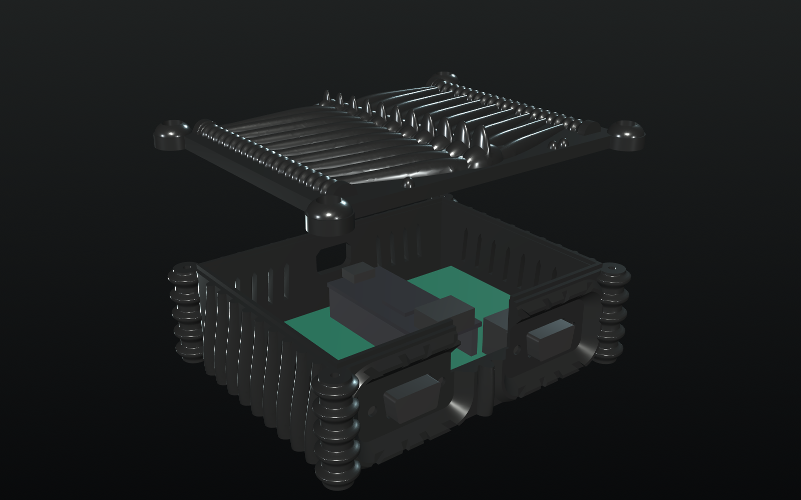

Genesis 3/6-button pads
2 sockets + 2 DB9 ports
Assembled case
USB-C power
Step 0
Gather parts for one console
The exact socket height and DB9 variant matter: the PCB footprint and case are designed around these parts. The sourcing document lists quantities for three boards; the list below is for one.
| Qty | Part | Notes / source |
|---|---|---|
| 1 | Tang Nano 20K | Board documentation; downward-facing male headers required. |
| 1 | O1 carrier PCB, 100 × 70 mm | OSH Park order ZIP; two-layer, 1.6 mm FR-4. |
| 2 | Harwin M20-7822046 | 1×20 female sockets, 2.54 mm pitch, 8.5 mm body height. DigiKey |
| 2 | Kycon K22X-E9P-N | Male right-angle DB9 with boardlocks and recessed #4-40 inserts. Not K22X-E9P-NJ. DigiKey |
| 2, if needed | Harwin M20-9992046 | 1×20 male headers, documented socket mate. Only buy if the Nano lacks suitable downward pins. DigiKey |
| 1 each | Printed base and lid | STLs and print settings below. |
| 4 | M2.5 × 6 mm self-tapping screws | PCB to the printed floor bosses; 2.1 mm pilot holes, 6 mm deep. |
| 4 | M3 × 12 mm screws | Lid to corner columns; heads ≤ 6.2 mm, 2.5 mm pilots, 15 mm deep. |
| 4, optional | #4-40 × 3/16 inch screws | Port wall to the DB9 inserts, only if the controller plugs clear the screw heads. |
| 4, optional | 10 mm round bump-on feet | Recesses under the base. |
| 1 | microSD / TF card | FAT32 or exFAT, with your own .md, .bin or .gen ROMs. |
| 1–2 | Wired Genesis controllers | SEGA OEM 3- or 6-button pads are the tested configuration. |
| 1 each | USB-C power cable, HDMI cable and HDMI display | Check the cable overmolds against the case clearances. Use an audio-capable HDMI display for sound. |
Tools: soldering iron, solder, flush cutters, multimeter, small screwdriver, socket-alignment jig or fixture, and a 3D printer. A computer with Gowin Programmer is needed for the initial flash.
Ordering: OSH Park is recommended within the USA. For another fabricator, use the generic Gerber ZIP. Review the fabrication checklist: 100 × 70 mm, 2 layers, 1.6 mm thickness, 1 oz copper, four nonplated 2.7 mm mounting holes. No stencil or SMT assembly is needed. More parts sources.
Step 1
Print the biomechanical base and lid
Print at 100% scale in the exported orientations. Keep the base's floor on the bed and the lid's flat underside on the bed, with the ribs up.
- PLA or PETG, 0.2 mm layers, 3 walls, 15–20% infill.
- No supports. Preview the sliced bridges before printing: the longest specified opening bridge is 17.9 mm at the DB9 shells.
- Base: 121.7 × 98.4 × 35.3 mm. Lid: 121.0 × 97.7 × 15.0 mm. Leave extra bed room if using a brim.
- Remove strings and any first-layer lip from the rim, groove and port openings. Dry-fit the empty lid; do not force the locating tongue.
- Optional finish: black filament with a light silver dry-brush. Finish and let it dry before installing electronics; keep vents and mating surfaces clear.

Step 2
Solder the four carrier components
All parts mount on the top / silkscreen side; solder from the bottom. In this top view, the DB9 ports face the front / bottom, USB-C will face the back / top, J6 is left and J5 is right.
- Inspect the bare PCB. Compare it with the assembly drawing. Check for damage and verify that the supplied parts fit without bending pins.
- J6 and J5: fit the female sockets. Openings face up; square pin-1 pads are nearest the USB-C end. Hold both flush and parallel with an alignment fixture at 20.32 mm row spacing. Tack the end contacts, recheck seating, then solder all 40 contacts. Do not solder the Nano into the carrier.
- J1 and J2: fit the DB9 ports. J1 is player 1 on the left, J2 player 2 on the right. The noses overhang the front edge. Tack a pin, check each connector sits flat, then solder all nine pins and both boardlocks on each connector.
- Inspect the joints. Remove solder bridges and trim protruding leads as needed. Leave H1–H4 empty: no solder, rivets or metal standoffs.
Count: four components, 62 soldered plated holes (40 socket contacts + 18 DB9 pins + 4 boardlocks), four empty mounting holes. No resistors, capacitors or external pull-ups are required.
If the Nano needs male headers, fit them separately, pointing down from its underside. Their height must match the specified socket/header stack.


Step 3 · No power, Nano removed
Continuity-test before inserting the Nano
Use a multimeter on the empty carrier. Count socket contacts 1–20 from the USB-C / back end. Identify DB9 contacts by their molded numbers or the connector drawing; the solder-side view is mirrored from the mating face.
| DB9 pin | Signal | P1 / J1 → J6 | P2 / J2 → J5 |
|---|---|---|---|
| 1 | Up / D0 | 1 · GPIO73 | 5 · GPIO42 |
| 2 | Down / D1 | 2 · GPIO74 | 6 · GPIO41 |
| 3 | Left / D2 | 5 · GPIO77 | 9 · GPIO51 |
| 4 | Right / D3 | 8 · GPIO27 | 10 · GPIO48 |
| 5 | 3.3 V supply | 19 · 3V3 | 16 · 3V3 |
| 6 | TL / B, A | 9 · GPIO28 | 12 · GPIO49 |
| 7 | TH select (output) | 12 · GPIO29 | 17 · GPIO72 |
| 8 | Ground | 20 · GND | 15 · GND |
| 9 | TR / C, Start | 13 · GPIO30 | 18 · GPIO71 |
- Test every row, not just power and ground. Both connector shells and all four boardlocks must connect to ground. Use net-test.csv as the bench checklist.
- 3V3 to GND must not be shorted. On this bare carrier it should read open.
- J5.1 is the Nano's 5 V contact and must be isolated from every other carrier contact. All socket contacts not listed in the table have no carrier connection.
- Check for unintended continuity between adjacent signal contacts. The two ports share 3V3 and ground, but their controller signals must remain separate.
Step 4
Flash GenThang and prepare the card
- Download the standard DB9 flash image from the
GenThang releases:
genthang_nano20k_db9_flash.bin. Verify it against that release'sSHA256SUMS. Do not use theraw, deprecated single-DB9, or800x480image for this HDMI build. - Flash the Nano separately. Connect it by USB-C and open Gowin Programmer.
Choose series GW2AR, device GW2AR-18C,
access mode External Flash Mode, operation
exFlash Erase, Program thru GAO-bridge. Select the complete
_flash.binand start address0x000000. Wait for successful programming. A bitstream-only.fsdoes not include the menu firmware. - Prepare a microSD card with an MBR partition table and FAT32 or exFAT
filesystem. Formatting erases the card: back up its contents first and verify
the selected device. Copy your own
.md,.binor.genROMs (up to 4 MB each); folders are supported. - Disconnect USB, then insert the card. The TF slot is on the Nano's underside and becomes inaccessible once the Nano is in the carrier.
- Insert the Nano into both sockets, component side up, with USB-C toward the back, away from the DB9s. Check that all 40 pins enter their sockets, with no one-position offset. Press evenly; do not force a misaligned row.
Full flashing instructions, including Linux CLI · Card preparation · Build from source
Step 5 · Test outside the case
Bring up both controller ports
- Put the assembly on a nonconductive surface. With no controllers attached, connect HDMI, then power the Nano over USB-C.
- Measure about 3.3 V between DB9 pin 5 (+) and pin 8 (GND) on each port. Keep probe tips from shorting adjacent pins. If the supply is wrong, disconnect power and investigate before attaching a pad.
- Disconnect USB. Connect a controller to J1 / player 1, then power on. Confirm the game browser appears, navigate with the D-pad, launch a game and test directions, A, B, C and Start. Test X, Y, Z and Mode in a game that supports a 6-button pad.
- Power off and test the second port in a game with player-2 support; its pad controls player 2, not the menu. Finally power off, connect both pads and test a two-player game. Change controller connections only while unpowered.
- Check HDMI audio during a game. The menu pauses the game and mutes audio. Keep Video output = HDMI: O1 has no line-out jack for DVI audio.
Do not close the case until the flash image, card, both ports and HDMI are working. Keep the Nano's LCD and speaker connectors unused: player-2 inputs GPIO49 and GPIO51 also have LCD/audio side effects on the Nano.
Step 6
Drop back, then slide forward
The port openings capture the DB9 shells. The board cannot simply be pushed straight down in its final position: the cavity has 6.9 mm extra length so it can enter behind the openings and slide into place.
- Unplug everything, including USB-C, HDMI and the pads. Check the TF card is already installed and the Nano is seated correctly.
- Orient the base with the two controller maws at the front. Lower the populated carrier into the cavity with its back edge against the back wall, USB-C toward the rear opening.
- Slide the whole assembly forward. Guide both DB9 shells through their D-shaped openings until the connector flanges stop against the 1.2 mm port wall. Do not lever on the Nano or bend the DB9 pins.
- Check that H1–H4 line up with the four floor bosses. Fasten with four M2.5 × 6 mm self-tapping screws. Tighten by hand only until the PCB is secure; do not bow it or strip the plastic.
- Optionally fasten the port wall to the recessed DB9 inserts with the #4-40 screws. Omit them if their heads interfere with your controller plugs.
If it binds: stop and check print cleanup, exact connector variant, socket/header height and lead trimming. Never use the screws to pull a misaligned assembly into place.

Dry-fit your cables before closing
- Controller plugs: face at most 32 × 16 mm, within the 35 × 19 mm recess. The port wall leaves 4.9 mm of the DB9 shell available for mating.
- HDMI: exits through the channel between the DB9 ports. Plug overmold at most 24 mm wide, about 15 mm tall; the Nano's receptacle is 10 mm behind the carrier edge.
- USB-C: exits at the rear. Overmold at most 13 × 7.5 mm, at least 15 mm long; the receptacle sits 14.7 mm inside the back wall.
These are the design's nominal cable envelopes, not a guarantee for every cable. With power disconnected, verify that each plug seats fully without forcing the enclosure or connector. Use a compatible cable rather than pulling the board toward an opening. See the case limits.
Step 7
Close up and play
- Seat the lid with its locating groove over the base's rim tongue. Align the lid's port markers: one node over player 1, two over player 2. Confirm no cable, component or debris obstructs the seam.
- Fit four M3 × 12 mm screws through the lid knuckles into the corner columns. Tighten gently and evenly; the lid should sit flush without bending. Add the optional feet underneath.
- With power off, connect pads and HDMI, then USB-C power. Player 1 is the left port when viewed from the front; player 2 is the right.
- Launch a game with player 1. Open the in-game menu with Start+A+B+C on a 3-button pad or Mode+Start on a 6-button pad. The Nano's buttons and LEDs are not exposed through this enclosure.
- Repeat the two-player and HDMI-audio checks with the lid fitted. Keep the side/back vents and lid slits unobstructed.
Changing the card later: unplug all cables, remove the lid, then lift the Nano evenly out of its sockets to reach the TF slot. Reinsert it in the same orientation and check both pin rows before restoring power.

Bench checklist
If something does not work
| Symptom | Check |
|---|---|
| No menu / no picture | USB power, HDMI cable/display, and a complete DB9 flash image including menu firmware. Check Nano orientation and socket seating with power removed. |
| Menu appears, no games | Card inserted before the Nano; MBR partition table, FAT32/exFAT, supported ROM extensions. The standard build cannot upload ROMs over USB. |
| Wrong or stuck buttons | Correct canonical db9 image, not raw or a legacy pinout. Power off, remove the Nano and repeat every continuity and isolation check. |
| Player 2 cannot navigate menu | Expected: the menu uses player 1. Verify P2 in a two-player game; leave the LCD and speaker connectors empty. |
| Picture but no audio | Test during a game, not while paused in the menu. Select HDMI video output, use an audio-capable HDMI display and check its volume. O1 has no analog line-out. |
| Plug will not seat / lid will not close | Compare cable envelopes, exact Kycon variant, 8.5 mm sockets, header stack and print scale. Clear print residue; do not force plugs or tighten screws to overcome an obstruction. |
Disconnect power immediately if a part overheats or the measured supply is wrong. Fix the cause before retrying. See firmware limitations and troubleshooting.
Files and references
Keep these on the bench
- Print: base STL, lid STL, editable STEP model.
- PCB: OSH Park ZIP, generic Gerbers, BOM, fabrication checksums.
- Bench references: assembly drawing, schematic PDF, continuity checklist, 1:1 fit print.
- Engineering notes: O1 carrier, PCB assembly, case assembly and print checks, verification scope.
- Software: releases, GenThang setup and usage.
This guide works offline from a checkout; no viewer library or external fonts are required. Use your browser's Print command for a paper or PDF bench copy.